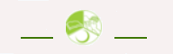

INTRODUCTION

Established in May 1999 by famous spiritual and religious scholar Maulana Bashir Ahmed Farooqui, Saylani Welfare International Trust was built on the fundamentals of breaking the cycle of poverty, alleviating the financial troubles of the poor, giving people a chance to live a dignified life and spreading happiness.
We are an organization that believes in lighting up the lives of underprivileged people across the world. We endeavor to provide the best quality services in areas including food, education, medical and social welfare free of cost to people living in the dark. With over 60 different sectors, we feed thousands of hungry people each day, hundreds more are given the hope of life through medical health care, many are educated to become leaders of tomorrow and several are given the opportunity to stand on their feet financially.
Today, we are proud to say that our physical presence extends throughout Pakistan with a vast network of 125 branches operating in major cities including Karachi, Lahore, Islamabad, Rawalpindi, Hyderabad and Faisalabad. Apart from Pakistan, we have overseas offices in the UK, USA and UAE as well. Our worldwide branches are operating under the guidance of a team of over 2,000 working professionals who help almost 125,000 people on a daily basis.
We strongly believe that a little help goes a long way and our work would not be possible without the generous support of our valuable donors. Our local and international donors have graciously lent us a hand by supporting our causes and enabling us to serve the needs of people in need.
| 125,000 Daily Dastrakhan(Monthly) |
7,500 Family Adoption(Monthly) |
73,749 Medical(Monthly) |
180,000 Education (Monthly) |
WHAT WE ARE DOING?